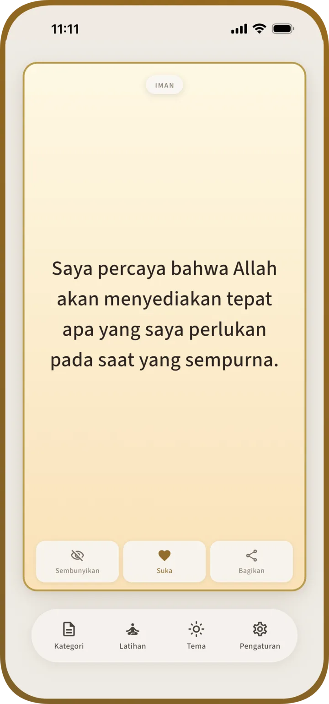
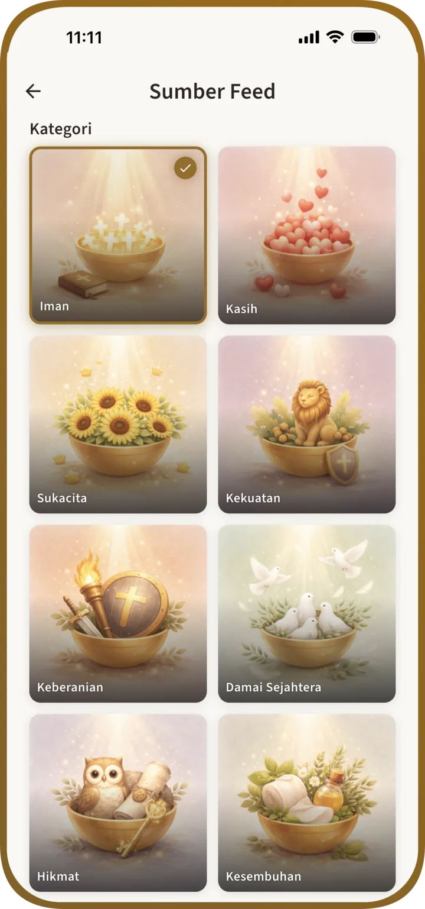
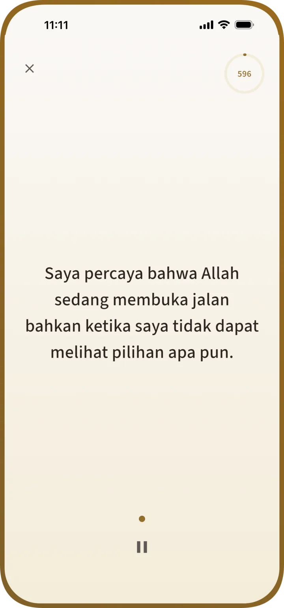
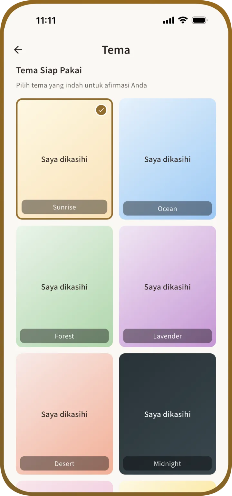

Manna.
Himpun Kebenaran Harianmu.
Bawa afirmasi Alkitab ke dalam doa dan renungan. Jaga kebenaran Tuhan tetap dekat saat kamu membutuhkan iman, pengharapan, damai, atau kekuatan.

Latihan
Apa itu afirmasi Kristen?
Afirmasi Kristen membantumu kembali mengingat Firman Tuhan saat hari terasa sibuk atau tidak menentu. Manna menghadirkan afirmasi Alkitab dalam latihan singkat yang berpusat pada iman, pengharapan, damai, dan identitasmu di dalam Kristus.
“Aku diciptakan dengan dahsyat dan ajaib.”
Mazmur 139:14“Segala perkara dapat kutanggung di dalam Dia yang memberi kekuatan kepadaku.”
Filipi 4:13“Allah tidak memberikan kepada kita roh ketakutan, melainkan roh kekuatan, kasih, dan ketertiban.”
2 Timotius 1:7Setiap kalimat berakar pada kebenaran Alkitab. Afirmasi Alkitab memberi pegangan ketika kecemasan, duka, tekanan, atau keraguan membuat janji Tuhan sulit diingat.
“Janganlah menjadi serupa dengan dunia ini, tetapi berubahlah oleh pembaruan budimu.”
Roma 12:2
Aplikasi
Janji Tuhan, disajikan dengan indah.
Atur waktu pengingat sesuai rutinitasmu dan tambahkan widget agar satu kalimat penting tetap terlihat.
Afirmasi Alkitab harian

Iman untuk setiap musim

Berlatih tanpa terburu-buru

Tema
Fitur
Latihan harian, bukan sekadar aplikasi lain.
Afirmasi Alkitab harian
Bangun ritme sederhana dengan afirmasi harian.
Iman untuk setiap musim
Setiap kalimat berakar pada kebenaran Alkitab.
Latihan
Mode latihan menyediakan ruang untuk meditasi Kristen atas Firman Tuhan.
Tema
Sesuaikan Manna dengan kebutuhanmu.
Pengingat
Atur waktu pengingat sesuai rutinitasmu dan tambahkan widget agar satu kalimat penting tetap terlihat.
Afirmasi Pribadi
Sesuaikan Manna dengan kebutuhanmu.
Mengapa Manna
Kebenaran baru setiap pagi.
Latihan yang mengubahkan.
Berakar dalam Alkitab
Setiap kalimat berakar pada kebenaran Alkitab.
Perbarui Pikiranmu Setiap Hari
Bangun ritme sederhana dengan afirmasi harian.
Bangun Iman yang Teguh
Mode latihan menyediakan ruang untuk meditasi Kristen atas Firman Tuhan.
Indah dan Bebas Gangguan
Pustaka bawaan dapat digunakan secara offline dan tidak memerlukan akun. Konten pribadimu tetap berada di perangkat.
Manna harianmu menanti.
Himpun Kebenaran Harianmu.